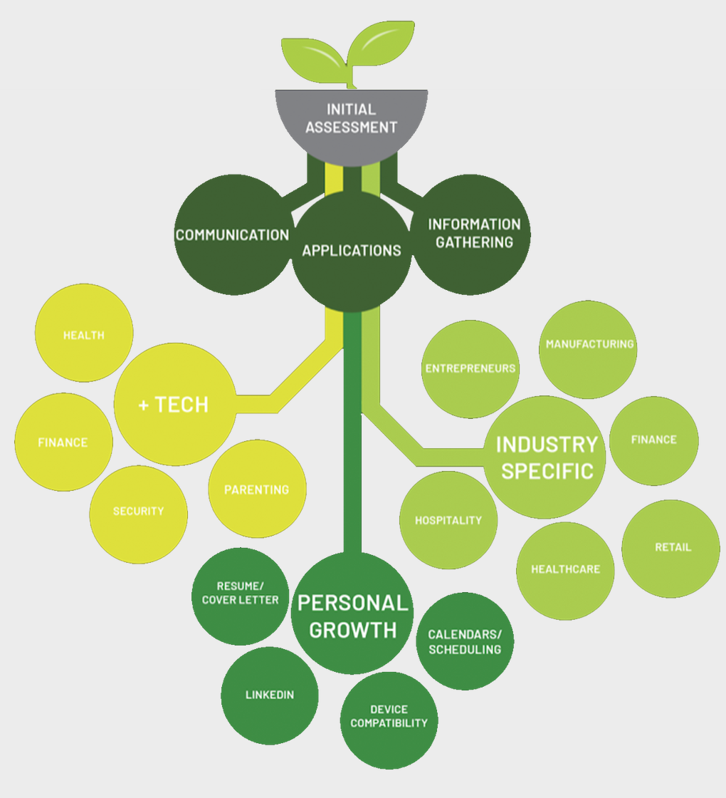

City of South Bend
Fall 2017
Design Research Practices
The City had received a grant from the federal government to be used relative to technology in the community. To ensure the grant was being spent in the most effective and needed manner, the City requested our class to perform research and provide a potential solution to the South Bend community’s relationship with technology. The City asked our team to focus the assignment on tech literacy, workforce preparation, and tech entrepreneurs.
Phase 1
After meeting with the City to gain a better understanding of their goals, we began to scope the current technology environment in South Bend. Scoping helped us empathize with the impact of the Studebaker factory closing down and the ensuing poverty in this community. One woman mentioned how she struggled to maintain a job because of the bus schedule. Her economic situation made her reliant on others. Holding a job was not in her control. If the bus was in an accident and was late or she didn’t fit on the earlier bus, then she didn’t get to work on time, and would soon be fired.
Based on our scoping, we divided our class into three teams based on who we determined were major facilitators in this challenge. The teams were focused on 1) current training/tech resources 2) community members and 3) local technology businesses.
We used this project to practice generative design research approaching with empathy emphasizing stories and patterns to create ideas that solve identified needs. Having a background in business and accountancy, I was placed on the local business outreach team. We developed a protocol based on our research plan using ethnographic techniques. Our protocol identified the target population and the specific techniques we would utilize to draw stories. At the local businesses we used card sorts to identify technological skills needed on the job, observations of their operations, and a “Build your ideal employee” game using the employer’s current application as a reference. At WorkOne, a local job placement resource, we performed intercepts with job seekers. By reaching out to both the “job providers” and the “job seekers”, we were able to see technology in relation to jobs from two perspectives. This would help us in the end to repair the connection between job seekers and job providers by improving workforce readiness.
We collected data through note taking, audio recordings, video and photography. We compiled our data and began to tag commonalities and surprising statements. We then organized our tagged data points using post its and string to connect themes that emerged and their related components.
By organizing our data, we found five major insights that we could use as implications for ideation. We used quotes from our research interviews to support our claims when presenting to the client.
Insight 1: Perception that if you are not tech savvy, there is a fundamental personality flaw Quote: “I would like them to not be afraid of using the internet, but we get stuck in our world” - James 40
Implication 1: Reframe the way tech averse managers perceive tech in the workplace
Insight 2: Perception that offsite resources can’t offer what onsite training can
Quote: “In 08/09, Indiana tried to handle this issue, but it wasnt implemented well and employers looked at those programs dubiously” - Vince, 45
Implication 2: Promote tech training as a solution to workday inefficiency as firms as in the business of XYZ, not the business of job tech training
Insight 3: Entry level position are neglected and investment in the employee is insufficient
Quote: “We had partnered with an outside class before, but we didnt see much improvement, but I think if we were more serious about it then it would have done more” - Sandra, 35
Implication 3: Create an element of fulfillment by explaining job paths/promotion levels as employees are hired
Insight 4: Perception that in a non tech role, there are no tech needs
Quote: “The University as a while is directing communication electronically, but our department is not in front of computers often and we have to reset their net IDs to reactivate their emails “ - Losa 42
Implication 4: Introduce platforms that employers can use to appropriately and comfortably enforce tech in any industry
Insight 5: Perceptions create a disconnect between actual job needs and expected needs
Quote: “This is default language I guess, wow, we need to update this [application qualifications]” - James, 40
Implication 5: Create a space for job providers to define actual needs and for job seekers to explore interests and abilities to form employment matches
Phase 2
After all three teams presented insights, we re organized the structure of the teams going forward for ideation and solutions. The teams were split into curriculum and programming, basic structure/space of the ITRC, and branding. I was committed to the disconnect between tech language use on applications inhibiting job seekers from connecting to job providers and job providers never being fully satisfied with their staff. For this reason, I was placed on the curriculum team.
The Branding team called the ITRC South Bend Spark, so our final solution included related language and imagery, seen in our curriculum overview and goal below. The structure of the programs would begin with an initial assessment of tech skills, where members would move up to tech in the daily life with the help of peer mentors
Solution Overview
Our first challenge was to tackle tech in the “daily life”. By enhancing tech skills to stimulate a more resourceful lifestyle, community members would feel more qualified for current job opportunities. The resource center would offer programs that would utilize tech to enhance communication skills, online job application abilities, and information gathering skills.
+Tech is an extension of tech in the daily life. The topics would be set up as “Health+Tech”, “Finance+Tech”, “Parenting+Tech”, and more. Tech in the daily life would give members the confidence in technology to be able to apply it to more important aspects of their lives and use tech as a resource to enhance their daily needs from parenting to paying bills.
Personal growth tech focused on tech to facilitate the ability to prepare a resume/cover letter, use calendar/scheduling softwares, understand device compatibilities, and sign up/navigate LinkedIn.
Industry specific tech would be trainings in tech that were used by specific industries, like plastics, hospitality, retail, etc. Job seekers can use the physical Hub space of the ITRC for training or utilize the Spark Trucks that are mobile ITRC sites that train on the job site.

Passing ITRC trainings, job seekers are given valid, recognized credentials that will enhance their ability to qualify for jobs, be prepared for the job, and be promoted quickly within the job.